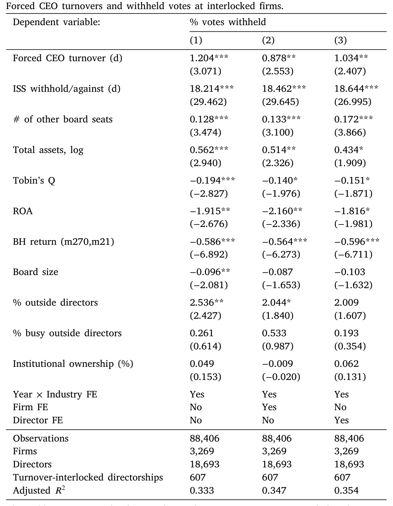
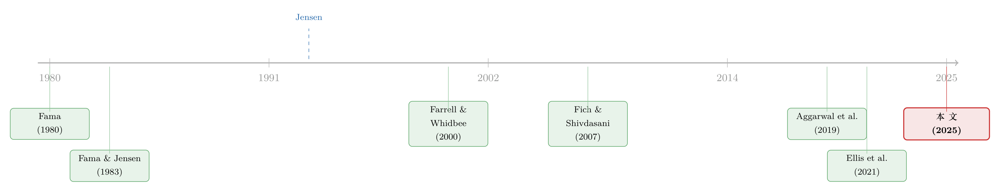

炒掉 CEO，董事是英雄还是「帮凶」？——股东用反对票投出了答案
本文读的是 von Meyerinck, Romer & Schmid (2025, Journal of Financial Economics)：当一位董事在 A 公司参与了「炒掉 CEO」的决定，他在 B、C 等其他任职公司的连任投票里，反对票会显著、且持续地上升约 1.20 个百分点（相对样本均值上升 19.6%）。但关键在于——董事并不是为「换帅」这件事本身受罚，而是为那些暴露出董事会自身监督失职的强制更替受罚。换句话说，「炒掉 CEO」常常不是治理良好的勋章，而是治理失败的罚单。
1 一个被默认了三十年的「常识」
先说一个几乎写进了公司治理教科书的命题：一家公司能果断炒掉表现糟糕的 CEO，是董事会尽职、治理有效的标志。
这个想法非常符合直觉。董事会最重要的职责之一，就是监督并在必要时更换 CEO（Fama, 1980；Fama and Jensen, 1983）。一个能下狠手的董事会，看上去就是个好董事会。实证文献里也长期把「强制 CEO 更替」当作「好治理」的代理变量来用：从 Weisbach (1988) 到 Dasgupta et al. (2018)，大量研究默认——董事会愿意开掉 CEO，说明它在认真干活。市场似乎也认这套逻辑：强制更替公告一出，股价往往是上涨的。
可是，如果你换一个角度看，事情就没那么干净了。
接着，一个自然的问题是：一家公司怎么会走到「不得不炒掉 CEO」这一步？答案多半是——这位 CEO 已经把公司搞得一团糟了。那么问题来了：在事情糟糕到非炒不可之前，董事会在哪儿？一个真正称职的董事会，难道不应该更早就察觉问题、更平稳地完成交接，而不是等到价值已经被毁掉一大截才动手吗？Jensen (1993) 早就提醒过：内部控制系统的失灵，恰恰常常以「危机时刻才被迫行动」的面目出现。沿着这条线，强制更替就不再是勋章，而更像是一张迟到的、自证失职的罚单。
于是，金融学里出现了两种针锋相对的看法，而它们背后，是对「强制更替到底传递了什么治理信号」的根本分歧：
- 主流观点：炒掉烂 CEO = 有效监督 → 参与的董事赢得声誉。
- 另一种观点（Jensen, 1993；以及 Mace (1971) 的案例研究、Dow (2013) 等理论工作）：需要炒 CEO = 监督已经失败 → 参与的董事失去声誉。
这篇论文要做的，就是把这场争论从「立场之争」拉回「数据之争」：董事到底是因为炒 CEO 而赚到声誉，还是赔掉声誉？
2 两道绕不过去的坎
可这事真要测起来，立刻撞上两堵墙。
第一堵墙：更替本身是内生的。 公司业绩差，才更可能炒 CEO（Fee et al., 2013；Dasgupta et al., 2018）。而业绩差本身就可能拖累董事声誉。如果你直接拿「参与了更替的董事」和「没参与的董事」比，你分不清股东到底是在罚「这次换帅」，还是在罚「这家公司业绩烂」。
第二堵墙：声誉本身很难量。 过去衡量董事声誉，常用「他后来丢了几个/拿了几个董事席位」。但席位的去留有董事自己的选择在里头——他可能主动辞掉某个烫手的位子（Levit and Malenko, 2016）。这是一个被董事自己「内生选择」污染了的尺子。
论文这两步破墙的设计，是它全部说服力的来源，值得慢慢看。
破第一堵墙——「连锁董事」(board interlock)。 作者只盯住那些身兼数职的董事：他在某一家公司（称为「更替公司」，turnover firm）参与炒掉了 CEO，然后我们去看他在其他任职公司（称为「连锁公司」，interlocked firms）的待遇。妙处在于：连锁公司和它们的股东，基本不受更替公司那摊烂事的影响——是什么导致了更替公司炒人，跟连锁公司八竿子打不着。于是，更替公司层面的业绩、行业冲击这些混杂因素，就被隔在门外了。我们看到的，是一次发生在「别处」的强制更替，像一束探照灯，打在这位董事身上，照见连锁公司的股东对他态度的变化。
破第二堵墙——「反对票」(withheld votes)。 作者用董事连任选举中反对票的比例作为声誉的度量，定义为
$$\text{Withheld} = \frac{\#\,\text{votes withheld} + \#\,\text{votes against}}{\#\,\text{votes cast}}$$
这把尺子的好处是：投票结果反映的是股东的决定，不是董事的决定，因此不受董事自我选择的污染。它是股东对某位董事满意与否的直接表态。而且越来越多研究表明，股东确实会用反对票来「打分」，董事也确实会对反对票的变化做出反应（Ertimur et al., 2012；Brochet and Srinivasan, 2014；Aggarwal et al., 2019）。
把这两步合起来，论文就有了一个干净的实验：同一个董事，在一次「外生」于连锁公司的强制更替前后，连锁公司股东给他的反对票变了多少？
3 识别策略：把「人」和「公司」的固有差异一次性差掉
具体的估计是一个广义双重差分 (difference-in-differences, DiD)。
处理组是「卷入强制更替的董事连任选举」，对照组是「没卷入的董事连任选举」。作者把因变量——两次连续连任选举之间反对票比例的变化 \(\Delta\text{Withheld}\)——回归到一个处理虚拟变量（这位董事在两次选举之间，是否在另一家公司参与了一次强制 CEO 更替）以及一组公司层面、董事层面的控制变量上。
这里有两个细节决定了识别的成色：
其一，在董事—公司层面做一阶差分 (first-difference)。 这一步把所有「不随时间变」的东西都差掉了：董事的天赋、能力，公司的企业文化——这些你永远观测不全的固有特质，统统不再干扰估计。
其二，加入行业—年份固定效应 (industry-year fixed effects)。 它吸收掉时间趋势、行业特定趋势、以及行业层面不可观测的时变冲击。于是比较被锁定在同一行业、同一年里：卷入更替的董事 vs. 没卷入的董事。在进一步的检验里，作者还分别叠加公司固定效应或董事固定效应，把比较进一步收紧到「同一家公司内」或「同一个董事在有无更替两种状态下」。
作者明确指出，这套设定本质上是一个「在水平值上、含双向（个体+时间）固定效应、并允许重复处理」的交错 DiD（参考 Heider and Ljungqvist, 2015）。更重要的是，他们论证了自己不太会踩中近年被反复讨论的「坏比较」陷阱（Callaway and Sant'Anna, 2021；Sun and Abraham, 2021；Baker et al., 2022）——这是当下做交错 DiD 必须正面回应的问题，他们没有回避。
4 数据：从一千多次「换帅」里，挑出真正的「被炒」
样本搭得很扎实。作者先从 BoardEx 里捞出 2003 年 1 月到 2017 年 12 月间所有 S&P 1500 公司的 CEO 离任，再到 Factiva 里逐条做新闻检索，确认离任公告的确切日期、继任者是谁、是否与离任一同宣布、以及离任的具体情形。
然后做减法：剔除因被收购、收购他人、出售/分拆业务而导致的离任（这些更像战略调整）；剔除代理权争夺、政府干预等「董事会之外的力量」导致的离任；再剔除在 BoardEx 和 ISS 里找不到足够董事会会议数据的样本。最后剩下 1773 次 CEO 离任，涉及 1739 位 CEO、1266 家更替公司。
最关键的一步，是把更替分成「强制」(forced) 与「非强制」(unforced)，沿用的是 Parrino (1997)、Peters and Wagner (2014)、Jenter and Kanaan (2015) 一脉的做法：若新闻报道显示 CEO 是被解雇、被迫离职、或因「未明说的政策分歧」而走，就算强制。对 60 岁以下离任的 CEO 还要格外小心（这正是 Parrino 的经典处理）。作者甚至加了一条自己的判据——若 CEO 在公告离任后一个月内并未真正离开公司，则归为非强制。这种「锱铢必较」的分类，是为了让「强制」这个标签尽可能干净。
5 主要结果：1.2 个百分点，听起来不多，其实很重
核心数字是：卷入强制更替的外部董事，在连锁公司的下一次连任中，反对票上升 1.20 个百分点。
你可能会撇嘴：才 1.2 个点，至于吗？至于。因为董事连任的得票通常高得惊人——样本里反对票的均值只有 6.1%。在这个背景下，1.20 个百分点意味着相对均值上升了 19.6%，绝不是小数。何况 Aggarwal et al. (2019) 已经证明，哪怕反对票只是温和上升，也会实打实地带来董事更替、委员会降级、劳动力市场机会减少等后果。加上各种控制变量和不同的固定效应组合后，这个系数几乎纹丝不动——说明强制更替并没有系统性地伴随董事或公司其他特征的变化，它更像是打在连锁董事身上的一次外生冲击。

Table 4: firms in the same industry and year. In Column 2, we add firm fixed
为了让读者对「1.2 个点到底算大还是算小」有个标尺，作者做了两件漂亮的对照：
第一，和其他「伤声誉」的公司事件比。 他们找来四类公认会损害董事声誉的事件：财务重述（Srinivasan, 2005）、集体诉讼（Fich and Shivdasani, 2007）、毒丸计划的采用（Johnson et al., 2023）、以及破产申请（Gow et al., 2018）。结果是：炒 CEO 带来的反对票增幅，比前三者都大，唯一压过它的是破产申请——而破产几乎是对股东最具毁灭性的事件了。即便如此，强制更替的冲击也大约相当于破产的一半。
第二，看会不会触发「极高反对票」。 借用 Bach and Metzger (2017) 的口径，把「反对票 ≥ 15%」定义为异常高的水平。结果：一次强制更替显著提高了董事在连锁公司遭遇极高反对票的概率。两条对照都在说同一句话——这个效应，量级上是实打实的大。
6 真正关键的反转：罚的不是「换帅」，是「失职」
到这里，故事其实可以收尾了：董事会炒 CEO，董事丢声誉，主流观点被推翻。但真正关键的一步在于作者没有就此打住，而是追问：股东到底在罚什么？
如果股东是在罚「参与更替」这件事本身，那不分青红皂白，所有更替都该挨罚。可数据给出的，恰恰是一个有选择的图景：
- 会挨罚的：被动型（reactive）的强制更替、在 CEO 任期最高产阶段把人炒掉、对 CEO 监督不力、以及连继任者都没准备好就把人赶走的——这些都指向董事会自己的监督失职。
- 不挨罚的：非强制离任，以及「当初看走眼、招错了 CEO」这件事本身。
最有力的一笔是这个：作者翻遍各个子样本，找不到任何一种情形能让董事因为参与强制更替而「赚到」声誉。这就堵死了「主流观点」的退路——如果炒 CEO 真是治理能力的可信信号，至少在某些干净的更替里我们应该看到声誉上升。结果一次都没有。
合在一起，结论就立住了：强制 CEO 更替并不是董事会监督能力的可信信号；相反，它常常是董事会层面治理失败的征兆，只不过这个失败直到「不得不炒人」的那一刻才暴露在阳光下。 股东不傻，他们罚的是「你怎么把局面搞到这一步」，而不是「你终于动手了」。
然后还有一个自然的追问：是谁在投这些反对票？要在所有任职公司里「追责」一位董事，股东得同时满足两个条件——既看得见这位董事在别处的作为，又看得见他在多家公司任职。作者据此推断：在更替公司和连锁公司都持有可观股份的机构投资者最有这个能力和动机。数据印证了这个猜想：负面投票效应，集中在那些机构投资者于两家公司都持股高于平均的连任选举里。
7 把所有「不是它」的可能，一个个排掉
一个聪明的读者此刻会冒出一串「会不会其实是……」。论文把它们逐一摁了下去，这部分做得相当诚实，值得单独表扬。
会不会只是在罚业绩差？ 业绩差 → 更易炒 CEO，而业绩差本身也可能被归因为监督不力（Klein, 1998），于是股东也许只是在罚业绩。作者用倾向得分匹配 (propensity score matching, PSM)：用 Peters and Wagner (2014) 的模型估出「炒 CEO 的倾向」，把发生强制更替的公司，匹配到那些「同样有很高概率炒人、却没炒」的公司。结果——卷入真更替的董事，比卷入「匹配上的、没真炒」公司的董事，仍然多挨显著更多的反对票，量级几乎和基准一模一样。更替公司的业绩，不是那个驱动结果的遗漏变量。
会不会是一个看不见的「为什么这家炒、那家不炒」的原因？ 两家业绩一样烂的公司，一家炒了一家没炒，背后那个未知原因，可能同时引发更替、又让股东对董事能力打折。作者把新闻情绪指数也塞进倾向得分估计里——管理层真犯了错，理应招来比「单纯运气差」更负面的报道。控制了新闻情绪后，结果依旧。
会不会只是「分心」(distraction)？ 一次强制更替要占用董事大量时间精力，他可能因此疏于照看连锁公司（Masulis and Zhang, 2019；Stein and Zhao, 2019）。作者用两招排除：其一，CEO 猝死——同样是对董事时间的冲击，但完全在董事控制之外、本不该影响声誉；结果猝死根本不影响连锁公司的连任结果。其二，董事会出席率并没有下降。分心解释，不成立。
会不会是时点对不上、或者会反转？ 平行趋势检验显示：强制更替之前，处理组与对照组的反对票变化没有显著差异；反对票的跳升恰好和更替同时发生，事后也不回落——持久。再加一个安慰剂检验：那些在 CEO 被炒之后才加入更替公司董事会、却赶在连锁公司下次连任前的董事，并没有遭遇反对票上升。这说明股东罚的是「你参与了那次更替」，而不是「你坐在一家刚炒过 CEO 的公司的董事会里」。
（关于股东如何通过长期、缓慢的信号来重新评估一位董事的价值，可参见《董事会的「价值」，藏在一段慢慢平息的波动里》，两篇正好是一枚硬币的两面——一篇看「学好」，一篇看「学坏」。）
8 余波：声誉的损失，最终落在劳动力市场上
论文最后一块，顺着 Farrell and Whidbee (2000)、Ellis et al. (2021) 的思路，去看强制更替对董事未来席位的影响。作者很坦白：这部分有内生性（董事可能主动请辞），所以只能算是佐证。
结果是：在「广延边际」(extensive margin) 上，卷入强制更替的董事更可能退出董事劳动力市场；在「集约边际」(intensive margin) 上，更替五年后董事会丢席位——最初丢的多在更替公司本身，随后四年虽有新席位补上，但新席位都在更小的公司。一句话：声誉的损失，最终切切实实地咬掉了董事在劳动力市场上的机会。这也正是 Fama (1980) 和 Fama and Jensen (1983) 所说的、董事劳动力市场的纪律约束——而这篇论文，给它提供了直接的证据。
9 文献脉络
把这条线捋一捋，能看清这篇论文站在哪儿。
最上游是 Fama (1980) 和 Fama and Jensen (1983) 的经典命题：经理人和董事的声誉，会被劳动力市场定价，从而形成纪律约束。这给「董事为何在乎声誉」提供了理论地基。
接着，治理文献把「强制 CEO 更替」当作好治理的标尺反复使用（Weisbach, 1988；Farrell and Whidbee, 2000；Dasgupta et al., 2018），并以更替公告的正向股价反应为佐证。但 Jensen (1993) 埋下了相反的种子：被迫行动恰恰可能是内控失灵的征兆。
然后，一支「董事投票」文献兴起，把反对票变成衡量股东满意度与董事声誉的利器（Ertimur et al., 2012；Brochet and Srinivasan, 2014；Aggarwal et al., 2019）；另一支「事件—声誉」文献则量出各类负面事件对董事的伤害（Srinivasan, 2005；Fich and Shivdasani, 2007；Gow et al., 2018；Johnson et al., 2023）。与此同时，「董事连锁」文献证明，一家公司的做法会顺着连锁董事网络传染到别处（Davis, 1991；Bizjak et al., 2009）。

而本文恰好坐在这三条线的交汇处：它借「连锁」隔离内生性、用「反对票」做干净的声誉尺子，正面回答了那个悬而未决的问题——炒 CEO 让董事赔声誉，而且赔的是「失职」那一份。它和直接研究董事去留的 Farrell and Whidbee (2000)、Ellis et al. (2021) 形成对照：后者用「未来席位」这把更糙、更内生的尺子，结论含混；本文用反对票，给出了一个无歧义的负向结论。
评论与延伸（Q&A + 研究方向）
(a) 几个可能的疑问
Q：「连锁公司不受更替公司影响」这个假设，真的站得住吗？
这是全文的命门，作者也最用力。逻辑上，连锁公司的经营和股东，确实和「更替公司为何炒人」相去甚远；经验上，一阶差分 + 行业—年份固定效应吸走了固有特质和行业冲击，PSM 又证明更替公司业绩不是遗漏变量。残余担忧是「网络层面的相关性」——但安慰剂（后加入的董事不挨罚）很大程度上把这条堵住了。
Q：1.2 个百分点这么小，会不会被夸大了重要性？
关键是参照系。均值才
6.1%，所以1.20pp 是19.6%的相对增幅；它比财务重述、集体诉讼、毒丸都更伤声誉，仅次于破产、约为破产的一半。再加上 Aggarwal et al. (2019) 证明的「温和反对票也有真实后果」，量级上是可信的「大」。
Q：这和直接看董事「丢没丢席位」的研究有何不同？
席位的去留掺了董事自己的选择（主动辞职），是被内生污染的尺子，所以 Farrell and Whidbee (2000) 与 Ellis et al. (2021) 结论才会打架。反对票是股东的决定，方向干净。本文也复核了席位结果，但把它放在佐证而非主证的位置。
Q：会不会是董事「分心」而非「失声誉」？
作者用 CEO 猝死做了漂亮的反证：猝死同样占用董事时间，却不影响连锁公司连任结果；董事会出席率也没降。分心解释被排除，剩下的就是声誉。
Q：这是否意味着「果断换帅」反而是坏事？
不能这么读。论文说的是：在「不得不强制更替」这个结果已经发生的条件下，它暴露的往往是更早期的监督失职。它并不主张「别炒 CEO」，而是提醒：把「敢炒 CEO」直接等同于「好治理」，是一种过于乐观的解读。
Q：股价对更替公告通常正向，和本文负向结论矛盾吗？
不矛盾。股价反应的是「终于解决了坏 CEO」这一前瞻性利好；而反对票度量的是股东对董事会过往监督表现的回溯性评价。前者看未来，后者算旧账，两者完全可以同时成立。
(b) 几个可能的研究问题与提案
1. 把这套逻辑搬到公司债/信用市场。
【经济故事】股东用反对票惩罚失职董事，那债权人呢？强制更替既暴露治理失败，也可能预示现金流恶化，按理应反映在信用利差或债券持有人的「用脚投票」（抛售）里。董事的连锁关系会不会把这种信用市场的负面评价也传染到连锁公司的债券定价上？
【可行性】中。需要 TRACE 债券交易 + Mergent FISD 发行数据，匹配本文的连锁董事样本，做事件研究/DiD 看连锁公司债券利差的变化。识别上沿用本文的「外生于连锁公司」论证即可，难点在于很多更替公司/连锁公司不一定有活跃的公开债。
2. 外资机构投资者会不会「不追责」？
【经济故事】本文发现追责者集中在「两家公司都持股高」的机构。但外资股东对海外董事在别处的作为，监控能力可能更弱、信息更滞后。若把机构按本土/外资拆开，外资是否更不容易把这种「跨公司失职」反映到投票里？这能直接刻画治理监督的「信息地理边界」。
【可行性】高。FactSet/13F + ISS 投票数据可拆分持有人类型与国别，在本文框架里加一个交互项即可，doable。
3. 强制更替会不会通过连锁网络压低连锁公司的债券流动性？
【经济故事】若市场把「卷入失职的董事」视为治理质量的负向信号，连锁公司可能面临更高的信息不对称，从而在债券二级市场上买卖价差走阔、深度变薄。这是把「董事声誉」翻译成「流动性」的一次尝试。
【可行性】中。需 TRACE 算 bid-ask spread/Amihud 类流动性指标，与连锁更替事件对齐。挑战在于把董事层面的冲击聚合到公司—债券层面，且要控制同期的公司基本面变化。
4. 「极高反对票」之后，董事会的实际行为会怎么变？
【经济故事】本文止步于「反对票上升」。下一步自然是问：遭遇 ≥15% 反对票的董事，是否真的被调离关键委员会、缩短任期、或被迫提升出席率？这能把「声誉信号」和「真实纪律」之间的链条补全。
【可行性】高。BoardEx/ISS 有委员会成员、任期、出席率的面板数据，紧接本文样本做后续追踪即可。
5. 继任准备度的「信息含量」可不可以被定价？ 【经济故事】本文发现「连继任者都没备好就炒人」会被重罚。这说明「继任规划」本身是一个可观测的治理质量信号。能否构造一个公司层面的「继任准备度指数」，检验它对未来强制更替概率、以及更替时市场反应的预测力？ 【可行性】中。需要从新闻/公告里手工或用大模型抽取「是否同时宣布继任者」「内部 vs. 外部继任」等信息，识别上偏描述性与预测性，因果较难，但作为治理质量度量很有价值。
我的判断
这篇论文最漂亮的地方，是用「连锁 + 反对票」这一组合，同时拆掉了困扰整条文献的两颗内生性钉子，把一个长期靠「立场」打嘴仗的问题，做成了一个能给出无歧义方向的因果证据。而它真正的贡献，不在「董事会丢声誉」这个结论，而在那个反转——罚的是失职，不是换帅——这把「强制更替=好治理」的旧共识，从根上撬动了。
要说对识别的担忧，我有两点。其一，「连锁公司不受更替公司影响」终究是个近似：如果两家公司之间存在本文未观测到的经济或网络关联（共同的大客户、同一拨机构同时减持），探照灯就可能不那么「外生」。安慰剂和 PSM 缓解了很多，但没法完全消除网络层面的同期相关。其二，反对票虽是股东的决定，却也受代理投票顾问（如 ISS）建议的强烈影响——如果顾问的评分规则系统性地惩罚「卷入更替」的董事，那我们看到的可能部分是「顾问的算法」，而非「股东的独立判断」。把投顾建议显式控制进来，会让结论更硬。
后续我最想看到的，是把这条逻辑推进到信用市场和外资持有人：股东用投票追责，债权人用利差和抛售追责吗？外资机构因为信息更远，会不会成为「追责的漏网之鱼」？这些既是本文框架的自然延伸，也正好落在公司债与流动性研究最缺干净因果证据的地带。
参考文献
Aggarwal, R., Dahiya, S., Prabhala, N.R. (2019). The power of shareholder votes: Evidence from uncontested director elections. Journal of Financial Economics 133(1), 134–153.
Baker, A.C., Larcker, D.F., Wang, C.C. (2022). How much should we trust staggered difference-in-differences estimates? Journal of Financial Economics 144(2), 370–395.
Bizjak, J., Lemmon, M., Whitby, R. (2009). Option backdating and board interlocks. Review of Financial Studies 22(11), 4821–4847.
Brochet, F., Srinivasan, S. (2014). Accountability of independent directors: Evidence from firms subject to securities litigation. Journal of Financial Economics 111(2), 430–449.
Dasgupta, S., Li, X., Wang, A.Y. (2018). Product market competition shocks, firm performance, and forced CEO turnover. Review of Financial Studies 31(11), 4187–4231.
Davis, G.F. (1991). Agents without principles? The spread of the poison pill through the intercorporate network. Administrative Science Quarterly 36(4), 583–613.
Dow, J. (2013). Boards, CEO entrenchment, and the cost of capital. Journal of Financial Economics 110(3), 680–695.
Ertimur, Y., Ferri, F., Maber, D.A. (2012). Reputation penalties for poor monitoring of executive pay: Evidence from option backdating. Journal of Financial Economics 104(1), 118–144.
Fama, E. (1980). Agency problems and the theory of the firm. Journal of Political Economy 88(2), 288–307.
Fama, E.F., Jensen, M.C. (1983). Separation of ownership and control. Journal of Law and Economics 26(2), 301–325.
Farrell, K.A., Whidbee, D.A. (2000). The consequences of forced CEO succession for outside directors. Journal of Business 73(4), 597–627.
Fee, C.E., Hadlock, C.J., Pierce, J.R. (2013). Managers with and without style: Evidence using exogenous variation. Review of Financial Studies 26(3), 567–601.
Fich, E.M., Shivdasani, A. (2007). Financial fraud, director reputation, and shareholder wealth. Journal of Financial Economics 86(2), 306–336.
Gow, I.D., Wahid, A.S., Yu, G. (2018). Managing reputation: Evidence from biographies of corporate directors. Journal of Accounting and Economics 66(2–3), 448–469.
Jensen, M.C. (1993). The modern industrial revolution, exit, and the failure of internal control systems. Journal of Finance 48(3), 831–880.
Jenter, D., Kanaan, F. (2015). CEO turnover and relative performance evaluation. Journal of Finance 70(5), 2155–2184.
Jenter, D., Lewellen, K. (2021). Performance-induced CEO turnover. Review of Financial Studies 34(2), 569–617.
Johnson, W.C., Karpoff, J.M., Wittry, M.D. (2023). The consequences to directors for deploying poison pills. Working paper.
von Meyerinck, F., Romer, J., Schmid, M. (2025). CEO turnover and director reputation. Journal of Financial Economics 163, 103971.
Weisbach, M.S. (1988). Outside directors and CEO turnover. Journal of Financial Economics 20, 431–460.